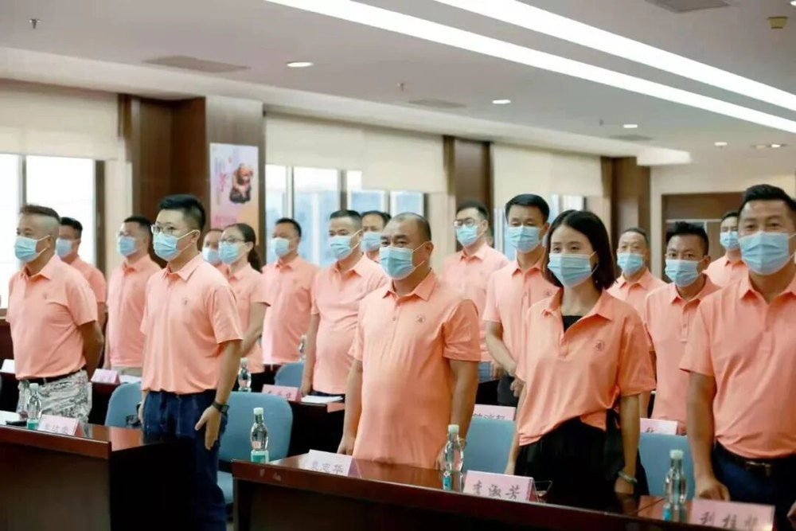

协会简介
扎根常平镇，服务个体工商户与私营企业，发挥政企沟通的桥梁纽带作用。
东莞市常平个体私营企业协会是2016年9月13日在东莞市民政局登记成立的社会团体，由常平镇个体工商户、私营企业自愿组成，属于直接登记的社会组织。协会法定代表人为袁志华，统一社会信用代码51441900MJM390749Q，登记地址设于东莞市常平镇常平工商分局3楼。
协会以宣传政策、信息服务、法律咨询、经验交流、业务培训、协助管理为业务范围，在主管部门与市个私协会指导下，围绕镇委镇政府重点工作部署开展工作：密切联系政府与企业，反映会员诉求；引导会员企业诚信守法经营、自觉维护市场秩序；组织会员参与社会公益与慈善事业，推动常平镇个体私营经济健康发展。
宗旨与工作定位
当好政企沟通的连心桥、会员企业的娘家人、行业自律的示范者。
政企联络
汇集会员意见，畅通政企沟通
服务兴会
走访交流、政策宣讲与业务培训
诚信自律
依法诚信经营与行业自律
协会坚持政治建会、服务兴会，在推动政府职能转变和放管服改革中积极献言献策，保障企业在制度建设中的知情权、参与权、表达权与监督权；同时建立基层联系点，把服务延伸到基层个体工商户与私营企业。
组织体系
2021年8月8日第二次会员代表大会选举产生第二届理事会与第一届监事会。
第二届理事会
- 会长：袁志华
- 秘书长：李达豪
- 副秘书长：吴辉红
- 常务副会长：李达豪、利柱坚、卢灼权、吴耀辉、李海南、
邓杨金、李淑芳、易红梅、许桂波
会议同时表决通过第一届理事会工作报告、协会章程、选举办法等事项，并选举产生第一届监事会。
协会会徽
圆形印章式会徽，中心为「協」字，外环环绕协会中文名称与英文名称，用于协会标识与活动形象。

会员代表大会会议现场
发展沿革
协会历年公开活动与组织建设的重要节点。
协会登记成立
9月13日在东莞市民政局登记成立，面向常平镇个体工商户与私营企业开展服务。
会员交流活动日
在海霞酒店举办年度会员交流活动，作工作总结与财务报告，并为新入会理事颁牌。
新春团拜会
1月14日举办会员交流活动暨新春团拜会，理事会成员单位达75个，全年累计扶贫捐款34万元。
第二次会员代表大会
8月8日召开第二次会员代表大会，选举产生第二届理事会与第一届监事会，袁志华当选会长。
成立七周年庆典
8月8日举行第二届理事会员就职典礼暨成立七周年庆典，市镇相关部门与全体会员参加。
新春走访慰问
1月21日走访慰问困难外来务工人员与困难残疾人，送上生活物资与新春关怀。
服务成效
会员交流、公益帮扶与政企协作的历年工作记录。
2018年，协会全年召开各类会议和党课20次，开展支部主题党日活动和参加党总支活动12次，理事会成员单位达75个；2020年，协会在册登记理事以上成员88位，参加市协会、政府部门组织的活动（会议）46次，获得奖牌奖杯、证书5个／份。协会还组织16家企业赴贵州省铜仁市玉屏侗族自治县开展协作考察及爱心助学，资助当地学生完成学业，并开展五一慰问、防疫慰问、灾后重建捐赠等公益活动。